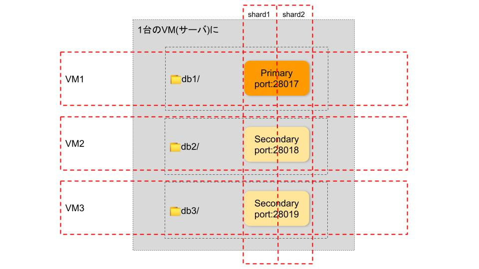

MongoDB - Sharding
Contents
MongoDB - Sharding¶
背景¶
前編にてレプリケーションについて学習した。それは、3つのフォルダに1つのDBを同様に配置すると理解してもらってもいいと思った。このようなイメージになる。
シャーディングは、レプリカセットをさらにカットしてDBを分割し、別のマシンに配置すると自分が理解しております。 
ところで、以下の内容を理解していただいてから、シャーティングをセットアップするのがおすすめです。
はじめに¶
◆目標¶
シャード(Shard)が2つあるシャーディングデモを構築する。
◆ アーキテクチャ図①¶
下記の3つのVM(yuantst01, yuantst02, yuantst03)にShard、Config サーバ、Router(mongos)を配置するイメージは、こちら↓↓↓
(mongos は yuantst01 のみに配置していると見えるが、yuantst02, yuantst03へのアクセスもできる次の「アーキテクチャ図②」に反映)

◆ 環境¶
VM: ubuntu 20.04(LTS) 3台、メモリ4GB/ディスク20GB
yuantst01 (139.59.190.209)
yuantst02 (139.59.182.250)
yuantst03 (139.59.178.240)
MongoDB: 5.0.2 (各VMにインストール)
◆ アーキテクチャ図②¶
レプリケーションと異なり、今回は、1つのシャードのポート番号をさらに分割しない。DBを3つのVMに配置することを前提とし、ドメイン指定で、シャードを分割する。アーキテクチャ図①を表で書くと、ドメインは下記のように設定する。 レプリカセットには、メンバー(1つのPrimary, 2つのSecondary)がある。そのコンセプトを使って、下図のmember1,member3,member5をshard1(レプリカセットのようなもの)の3つメンバーとして作成する、member2,member4,member6をshard2の3つメンバーとして作成するのを理解してもいい。

◆ 手順¶
ドメイン設定(hosts追加)
Shardingディレクトリを用意
1つ目のShardを作成して初期化
Config サーバのレプリカセットを作成して初期化
Router(mongos)を設定
大量データを作成(Shardキーを
hashedで設定)2つ目のShardを追加
Router(mongos)に配置
セットアップ手順¶
1. 各VMにhosts設定を追加¶
echo "139.59.190.209 yuantst01 member1.example.com member2.example.com" >> /etc/hosts
echo "139.59.182.250 yuantst02 member3.example.com member4.example.com" >> /etc/hosts
echo "139.59.178.240 yuantst03 member5.example.com member6.example.com" >> /etc/hosts
2. ディレクトリを用意¶
mkdir -p /data/shard1/
mkdir -p /data/config/
mkdir -p /data/shard2/
mkdir -p /data/mongos/
3. 1つ目のシャードを設定¶
mongod --bind_ip 0.0.0.0 \
--replSet shard1 \
--dbpath /data/shard1 \
--logpath /data/shard1/mongod.log \
--port 27010 \
--fork \
--shardsvr \
--wiredTigerCacheSizeGB 1
--shardsvr --wiredTigerCacheSizeGB 1は内部キャッシュの最大値を少なめに(1GB)設定する。
メモリ4GBのVMに対して、デフォルトのキャッシュ値は1.5GBになる。
参考: storage.wiredTiger.engineConfig.cacheSizeGB
mongo member1.example.com:27010 --quiet
rs.initiate({ \
_id: "shard1", \
members: [ \
{ _id: 0, host: "member1.example.com:27010"},\
{_id: 1, host: "member3.example.com:27010"},\
{_id: 2,host:"member5.example.com:27010"}]})
4. configサーバを設定¶
mongod --bind_ip 0.0.0.0 --replSet config --dbpath /data/config --logpath /data/config/mongod.log --port 27019 --fork --configsvr --wiredTigerCacheSizeGB 1
mongo member1.example.com:27019 --quiet
rs.initiate({ \
_id: "config", \
members: [ \
{ _id: 0, host: "member1.example.com:27019"},\
{_id: 1, host: "member3.example.com:27019"},\
{_id: 2,host:"member5.example.com:27019"}]})
5. mongosを設定¶
mongos --bind_ip 0.0.0.0 --logpath /data/mongos/mongos.log --port 27017 --fork --configdb config/member1.example.com:27019,member3.example.com:27019,member5.example.com:27019
mongo member1.example.com:27017 --quiet
sh.addShard("shard1/member1.example.com:27010,member3.example.com:27010,member5.example.com:27010");
追加してから、詳細を確認する。
sh.status()
6. 大量なデータを作成¶
シャード(foo)用のCollection(bar)をデフォルトフィールドの_idをhashedというShard Keysとして作成する。
sh.enableSharding("foo");
sh.shardCollection("foo.bar",{_id: 'hashed'});
 10000件のデータを作成する。
10000件のデータを作成する。
use foo
for (var i=0; i<10000; i++) {
db.bar.insert({i: i});
}

作成したCollectionの状況を確認する。
上図から、chunks: shard1 2...と返されている。それは、barというコレクションは、2つのChunkで分割されていることを示している。
どのように分割されているのかは、{"_id" : {"$minKey" : 1 }} -->> {"_id" : NumberLong(0) } on : shard1 Timestamp(1, 0)...と2つの形だと分かれている。
データの範囲を使ってShard キー指定する方法もあるが、hashed という形で試したかったから、デフォルトの_idフィールドで指定していた。目でデータを確認するとき、分かりづらいと思われがちだが、推奨されている方法である。
The field you choose as your hashed shard key should have a good cardinality, or large number of different values. Hashed keys are ideal for shard keys with fields that change monotonically like ObjectId values or timestamps. A good example of this is the default
_idfield, assuming it only contains ObjectId values.
出典: Hashed Sharding Shard Key
直訳すると、
“ハッシュされたシャードキーとして選択するフィールドは、適切なcardinality、または多数の異なる値を持っている必要がある。ハッシュキーは、ObjectIdやタイムスタンプのように単調に変化するフィールドを持つシャードキーに最適。良い例は、ObjectIdのみが含まれていると仮定した場合のデフォルト_idフィールドです。”
7. 2つ目のシャードを設定¶
1つ目のシャードを作成する方法と同様に、2つ目のシャードを設定する。
mongod --bind_ip 0.0.0.0 --replSet shard2 --dbpath /data/shard2 --logpath /data/shard2/mongod.log --port 27011 --fork --shardsvr --wiredTigerCacheSizeGB 1
mongo member2.example.com:27011 --quiet
rs.initiate({ \
_id: "shard2", \
members: [ \
{ _id: 0, host: "member2.example.com:27011"},\
{_id: 1, host: "member4.example.com:27011"},\
{_id: 2,host:"member6.example.com:27011"}]})
8. 2つ目のシャードをmongosに追加¶
mongo member1.example.com:27017 --quiet
sh.addShard("shard2/member2.example.com:27011,member4.example.com:27011,member6.example.com:27011");
sh.status()
シャードfooのCollection(bar)を確認する。

sh.status()
別のVMでもシャーディングの状況も確認できる。yuantst02では、

実際、Collection(bar)のデータはどのように分割されているのかをGUI(Compass)で確認してみよう。 Shard1は、10000件データのうち、4996件がこちらに格納されている。
Shard2は、10000件データのうち、5004件がこちらに格納されている。
無事にシャーディングで分割しました。 以上。